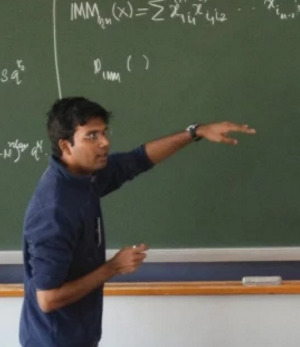

I am a Post Doctoral fellow with Nutan Limaye at the Department of Computer Science and Engineering, IIT Bombay.
I am broadly interested in the area of Computational Complexity and specifically, the topics in Boolean Function Complexity and Arithmetic Circuit Complexity.
I was a PhD student at Chennai Mathematical Institute studying Theoretical Computer Science and was advised by Partha Mukhopadhyay.

An Exponential Depth-Hierarchy Theorem for Constant-Depth Multilinear Circuits.
(with Christian Engels, Nutan Limaye and Srikanth Srinivasan.)
- Under submission.
Small-depth Multilinear Formula Lower Bounds for Iterated Matrix Multiplication, with Applications. [pdf]
(with Nutan Limaye and Srikanth Srinivasan.)
- In the proceedings of STACS 2018 (to appear).
Exponential lower bounds for the depth five powering circuits. [pdf]
(with Ramprasad Saptharishi.)
- Merged with this paper of Christian Engels, B. V. Raghavendra Rao and Karteek Sreenivasaiah.
- Under submission.
The Chasm at Depth Four, and Tensor Rank: Old results, new insights. [pdf]
(with Mrinal Kumar, Ramprasad Saptharishi and V Vinay.)
- Preprint.
On the Limits of Depth Reduction at Depth-3 Over Small Finite Fields. [pdf]
(with Partha Mukhopadhyay.)
- In proceedings of MFCS 2014 [Conference version].
- Invited to the special issue of Information and Computation for MFCS 2014 [Journal version].
Depth-4 Lower Bounds, Determinantal Complexity : A Unified Approach. [pdf]
(with Partha Mukhopadhyay.)
- In proceedings of STACS 2014.
The Chasm at Depth Four, and Tensor Rank: Old results, new insights.
[Slides]
Yet another biased survey of arithmetic circuit complexity.
Mathematical Sciences Initiative & Dept. of CSE seminar, IIT Kanpur. [Slides]
PhD Thesis (Under evaluation): On Some Lower Bounds in Arithmetic Circuit Complexity. 2017.
(Advised by Partha Mukhopadhyay.)
MSc Thesis: On Depth Reduction of Arithmetic Circuits. 2013.
(Advised by Partha Mukhopadhyay.)